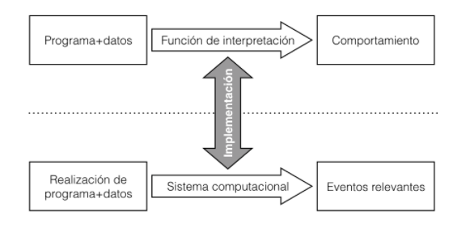

Para Turing el proceso de computación efectiva son dadas por el “computer”, el cual se encarga de la percepción y memoria limitadas que se cristalizan en la utilización de papel y lápiz, y operaciones elementales con ellos. Así computar es seguir una serie de reglas prescritas, por esto mismo la importancia de estas máquinas.
Un intérprete es una noción general que provee un marco uniforme que se utilizará para analizar,caracterizar y relacionar mecanismos físicos, como se usan en las calculadoras y computadoras una persona actuando mecánicamente o realizando reducciones de un término 𝛌.
Un aspecto en común de lo mencionado anteriormente se puede caracterizar por su comportamiento. Por comportamiento queremos decir que es una descripción idealizada de la ocurrencia de eventos que se consideran relevantes. Evitamos hacer una especificación de la definición, ya que lo que nos importa es obtener el concepto de sistema computacional en su generalidad y nuestros resultados aplicarán a los comportamientos.
Cuando los elementos P se construyen utilizando algún lenguaje, lo llamamos lenguaje de programación. Cuando se considera el comportamiento en la salida de datos, suele obtenerse que B=D. Una función de interpretación prescribe el comportamiento de un conjunto de programas. Un programa existe cuando una función le da una interpretación. Un ejemplo son los números de Gödel los cuales permiten considerar los números como programas. Aclarando así que los conceptos de función de interpretación, programa son interdefinibles.
